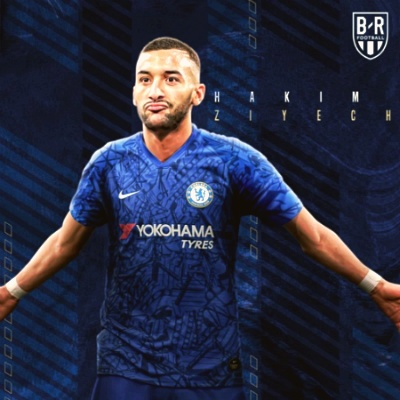

첼시의 여름 이적시장
2019-2020 시즌 FIFA에 영입 금지 징계를 받고도 시즌 성적 4위 챔피언스리그 티켓을 따낸 첼시
사실 사리 감독이 팀 재편 실패 후 설상가상 영입 금지 거기에 감독 경험이 별로 없는 램파드를 선임.
속으로 저번 시즌 강등 안 당하면 다행이겠다 싶었는데.. 엄청난 반등을 보여줬죠.
올 시즌 리그 4위라는 성적이 이러한 악조건 속에서 이루어낸 성적이기 때문에 단순히 4위 그 이상의 가치 있는 순위라고 생각됩니다.
2019 - 2020 시즌이 끝나고 첼시는 올여름 폭풍 영입을 하고 있고 앞으로도 영입할 선수들이 많아 보입니다.
새로운 얼굴들
티모 베르너
이적료 : 약 800억
국적 : 독일
나이 : 96년생 (23세)
포지션 : 센터 포워드, 왼쪽 윙어
장점 : 빠른 발을 이용한 침투 능력, 골 결정력
단점 : 포스트 플레이 약점 / 역습 시 속도를 이용한 돌파는 가능하지만 내려앉은 팀에게 개인기를 이용한 돌파를 잘 하지 못한다

하킴 지예흐
이적료 : 600억
국적 : 모로코
나이:93 년생 (26세)
포지션 : 공미, 윙 포워드
장점 : 왼발 킥 능력이 정말 좋고 공격포인트 경기를 바꿔줄 수 있는 선수 /큰 경기 경험이 많다
단점 : 피지컬이 EPL과 어울리지 않는다 (너무 마름) / 킥에 비해 드리블 능력이 부족하다
벤 칠웰
국적 : 잉글랜드 이적료 : 약 790억
나이 : 96년생 (23세)
포지션 : 왼쪽 풀백
장점 : 90분 내내 빠른 발을 이용한 엄청난 활동량 / 왼발잡이지만 오른발 능력도 준수 / 주력, 체력, 크로스 능력 풀백으로서의 공격적인 부분에서는 모두 뛰어남
단점: 미친 공격력에 비해 수비력은 약하다는 평가 / 수비 스탯은 리그에서 하위/